Projects
Project work & collaborations
Alongside private practice, I have had the privilege of contributing to a couple of professional collaborations that have shaped how I work today.
In cooperation with Malou Deichmann, Neuromuscular Workout
Rehabilitation of wounded soldiers and war veterans
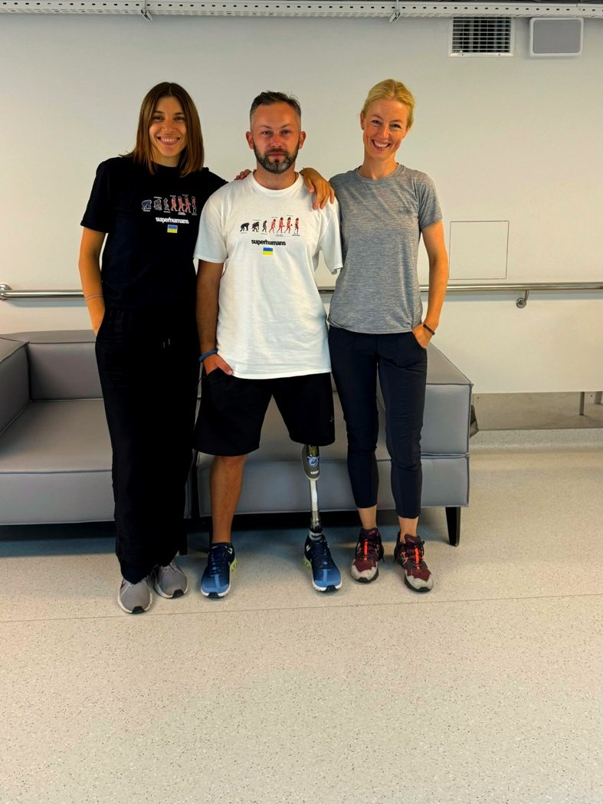
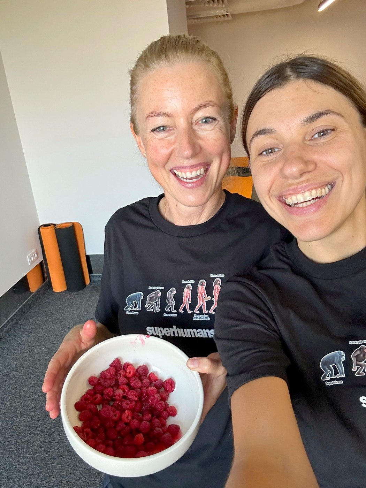
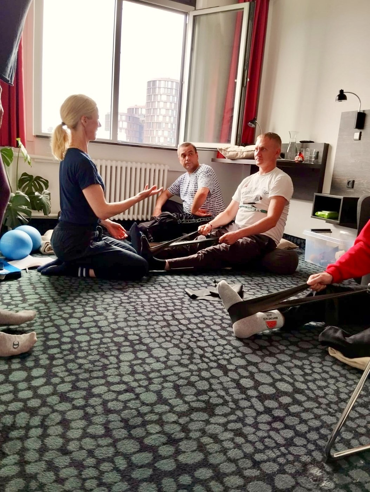
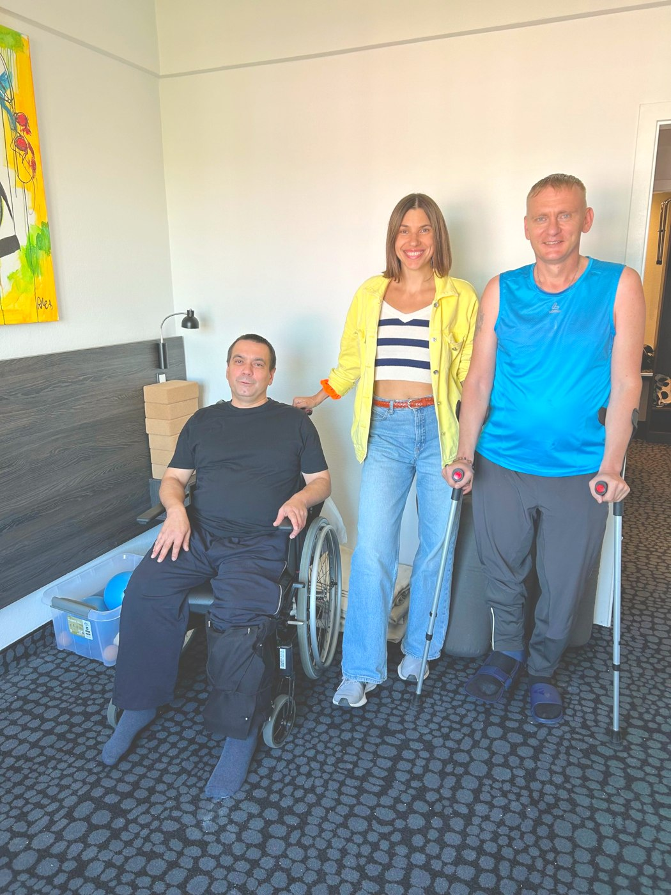
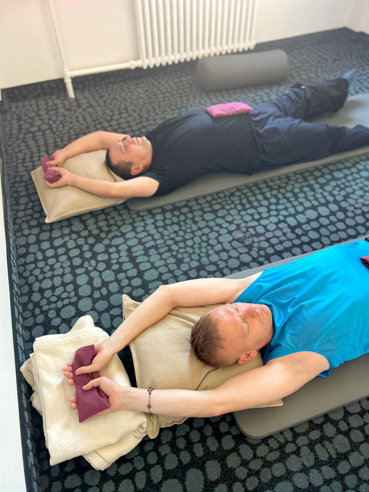
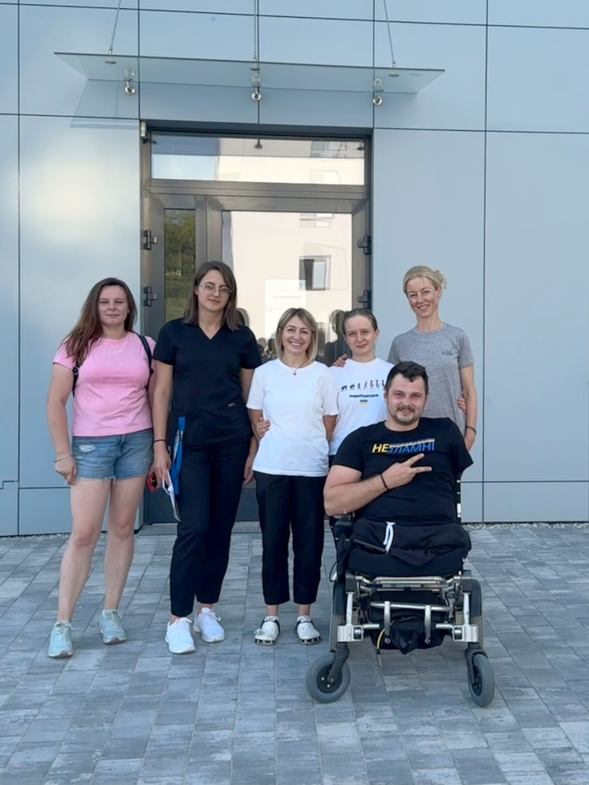
In partnership with DIGNITY – Danish Institute Against Torture
Rehabilitation of displaced civilians
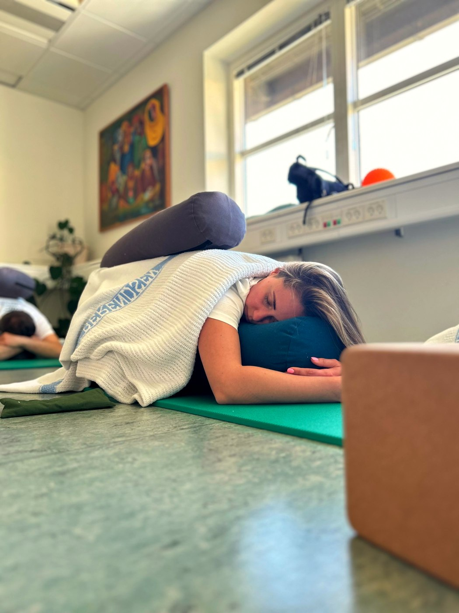
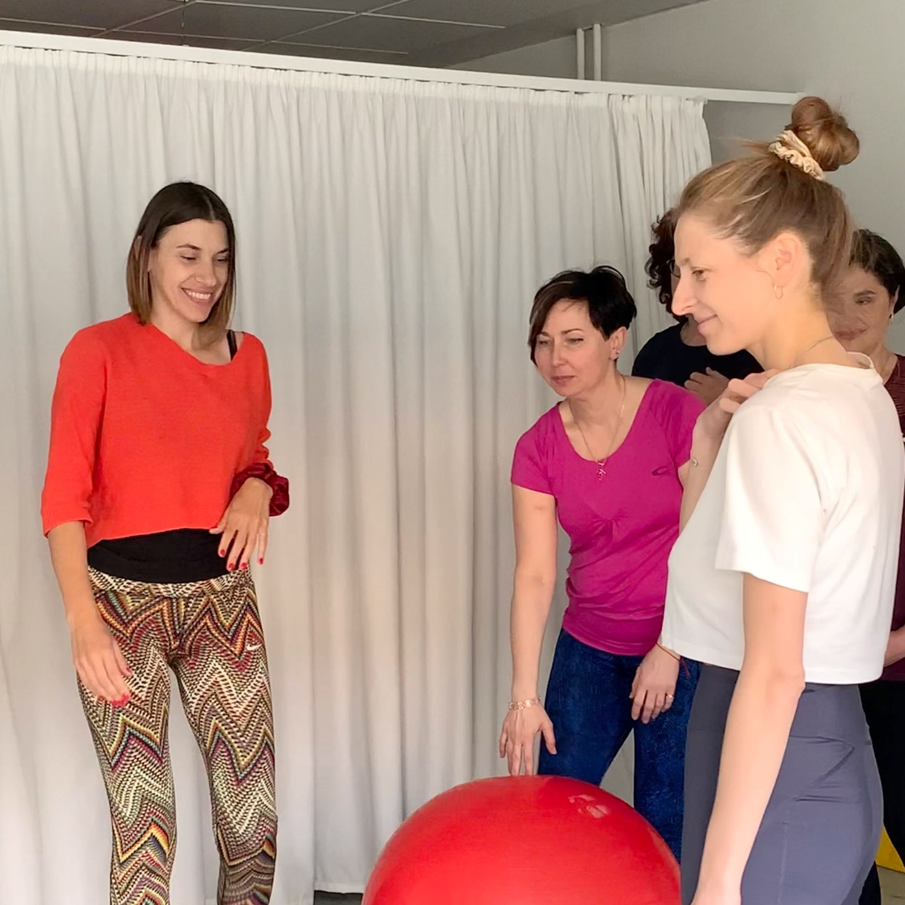
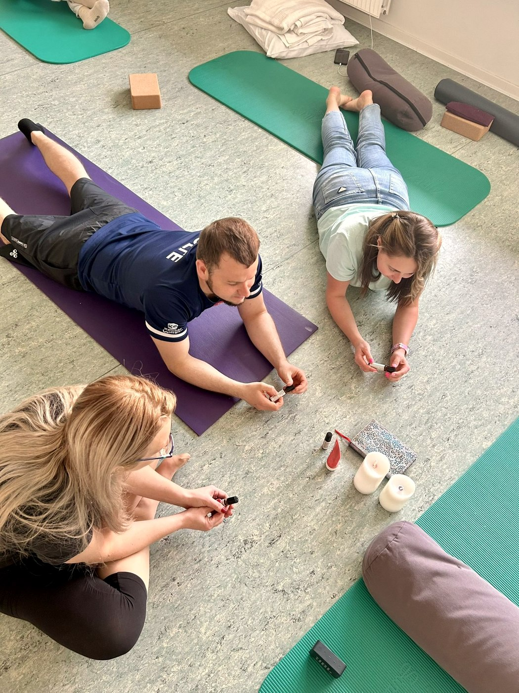
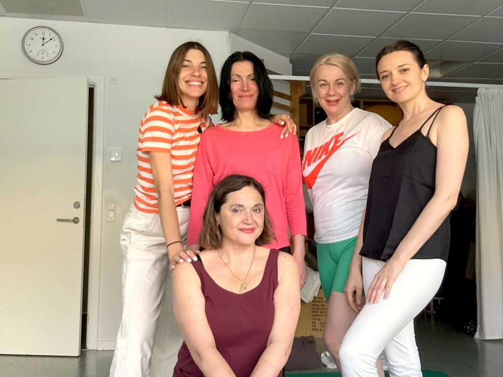
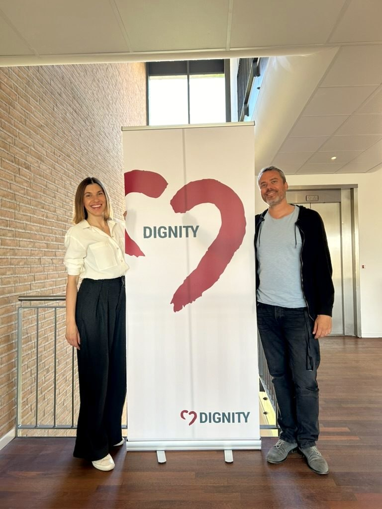
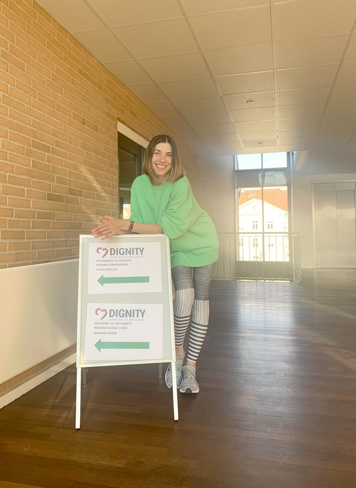
These experiences have deeply informed my trauma-informed, body-oriented approach – but my practice today is open to anyone navigating stress, burnout, chronic pain or difficult life experiences, whatever their background.